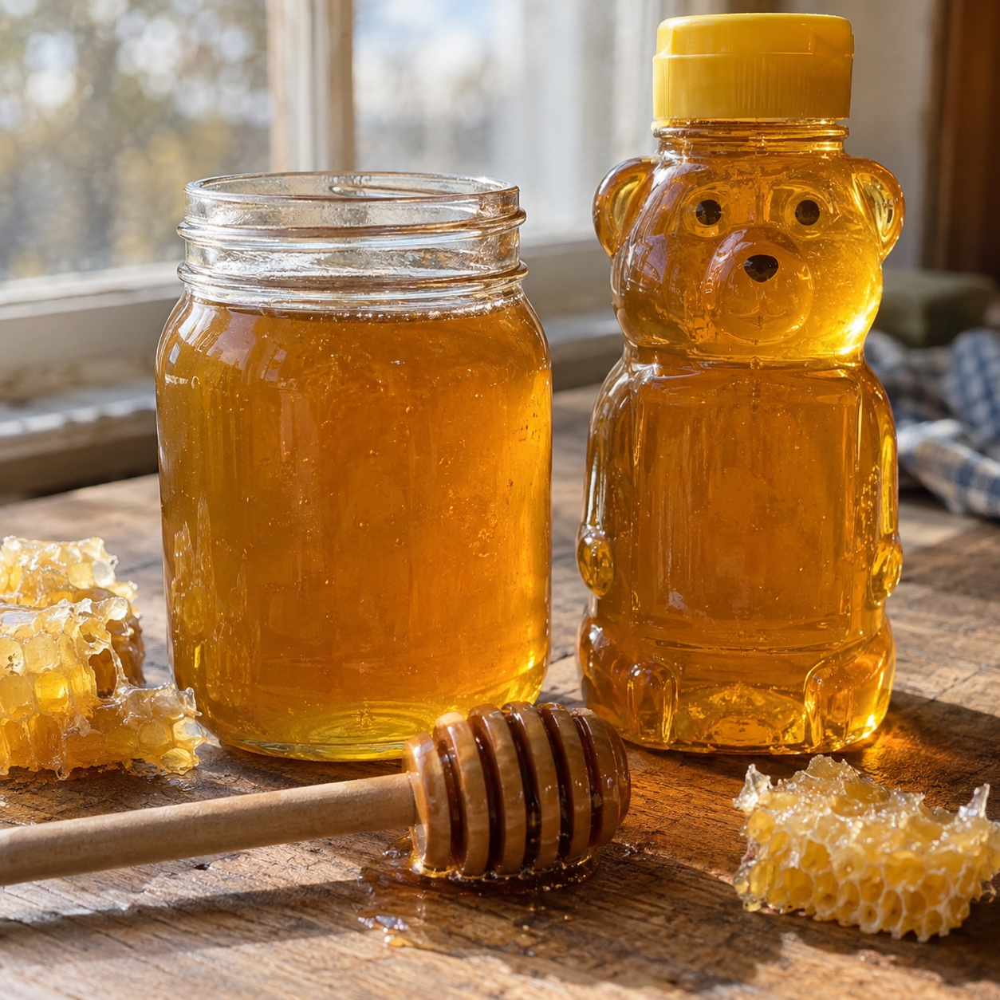

Vidro ou plástico para vender mel: como escolher a embalagem certa

Você produz mel e chegou na hora de embalar pra vender. Vidro parece mais bonito, mas será que compensa o frete e o risco de quebra? Plástico é mais barato, mas não vai passar a ideia de que o mel é mais simples do que é? A resposta curta: não existe embalagem melhor no absoluto, existe a que combina com o canal onde você vende.
Vidro: o que ele resolve
O vidro não transfere sabor nem odor pro mel, e deixa a cor, a textura e até a cristalização natural bem visíveis, o que reforça a sensação de produto puro pra quem está comprando. É a opção mais associada a mel premium, artesanal ou de presente, com boa aceitação em empórios e lojas especializadas.
O lado que pesa: é mais frágil no transporte (exige caixa e proteção adequadas) e mais pesado, o que aumenta o custo de frete, principalmente em venda fora da sua cidade.
Se a ideia é reaproveitar potes de vidro que você já tem em casa em vez de comprar novos, vale conferir como esterilizar pote de vidro reutilizado antes de encher com mel.
PET: o que ele resolve
O plástico PET é mais leve, resiste bem a queda e reduz bastante o custo de frete, principalmente pra quem vende fora do estado. Também permite formatos variados (redondo, quadrado, com alça), e ainda deixa o mel visível através do frasco.
O lado que pesa: parte do consumidor associa plástico a um produto de menor valor. Isso se compensa com rótulo e acabamento gráfico bem feitos, mas é uma barreira a menos se você já parte do vidro.
E o squeeze?
O formato squeeze facilita o uso direto, sem precisar de colher, e tem boa aceitação em cafeterias, hotéis, lanchonetes e casas com criança. O ponto de atenção real: mel cristaliza com o tempo e a temperatura mais baixa, e isso pode entupir o bico. Vale testar o squeeze com o seu mel de verdade antes de fechar um lote inteiro nesse formato.
Não existe embalagem melhor, existe a que combina com o que você vende
Vidro comunica tradição e cuidado, e funciona melhor em ponto de venda físico, empório, presente ou linha premium. PET favorece consumo do dia a dia, supermercado, e-commerce e operação de maior volume. Squeeze resolve praticidade de uso, mas pede teste antes de decidir. A pergunta que decide não é "qual embalagem é melhor", é "qual embalagem deixa mais clara a proposta do mel que eu vendo".
Se a escolha for vidro
Pra quem decide pelo vidro, o formato mais comum pra mel vendido em pote maior (não o mini de degustação) usa fechamento twist-off, que veda bem e é fácil de abrir sem ferramenta. O Pote Conserva 500 ml e o Pote Conserva 600 ml, ambos com tampa disponível em branca, dourada ou preta, servem pra esse uso. Pra mini-pote de degustação ou kit de presente, o Pote Geleinha 40 ml cobre o formato menor.
Se você já sabe qual caminho faz mais sentido pro seu mel e quer ver as opções completas de pote de vidro, conheça o catálogo da PodEmbalar ou fala direto com a gente pelo WhatsApp pra tirar dúvida sobre volume.